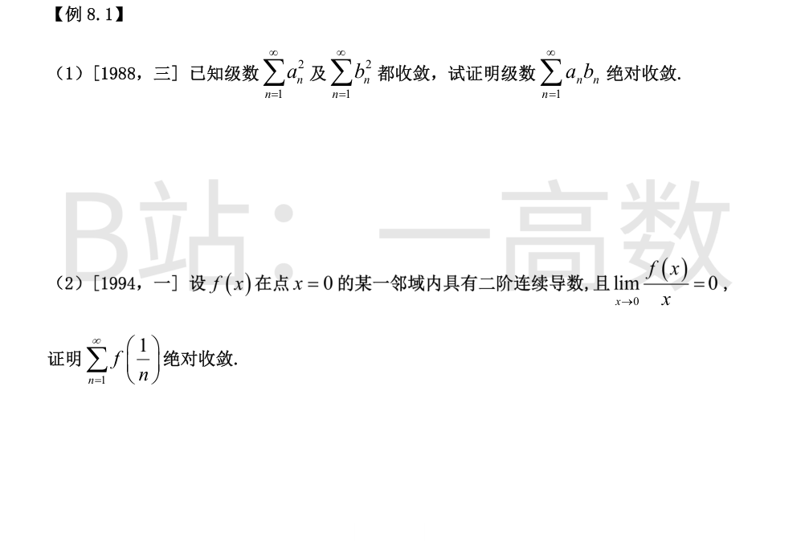
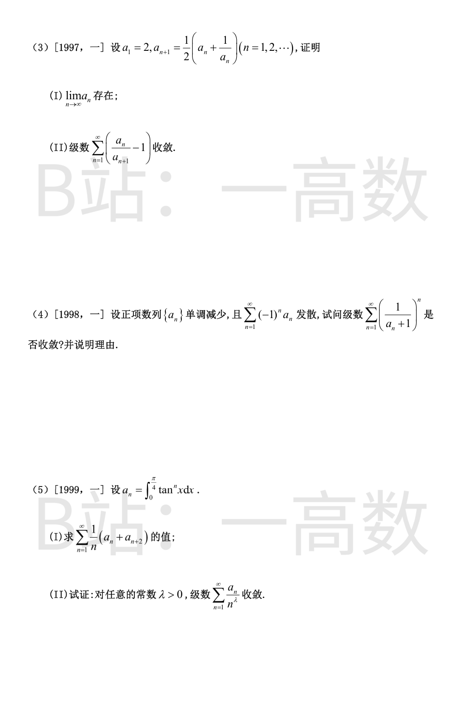
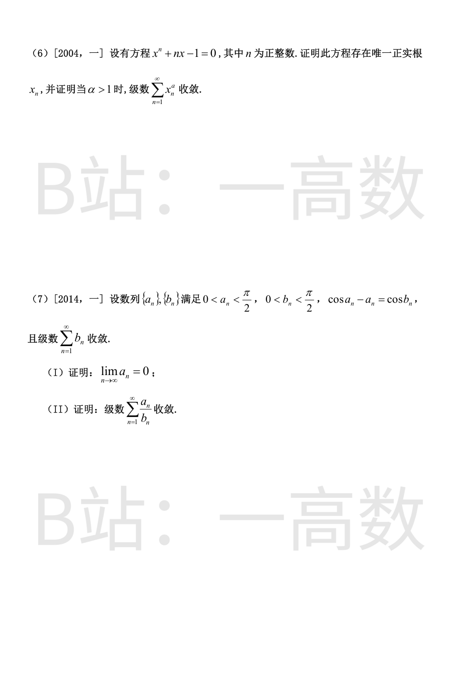

对任意 n：
$$2|a_nb_n|\le a_n^2+b_n^2\ \Rightarrow\ |a_nb_n|\le\frac{a_n^2+b_n^2}{2}$$
Σ(a_n²+b_n²)/2 是两个收敛级数之和，收敛。由正项级数比较判别法，Σ|a_nb_n| 收敛，即 Σa_nb_n 绝对收敛。证毕。
由 f 连续及 lim f(x)/x = 0：f(0)=\lim f(x)=0，f'(0)=\lim\frac{f(x)-f(0)}{x}=0。
在邻域内用带拉格朗日余项的泰勒公式：
$$f(x)=f(0)+f'(0)x+\frac{f''(\theta x)}{2}x^2=\frac{f''(\theta x)}{2}x^2,\quad 0<\theta<1$$
f'' 连续故在邻域内有界：|f''|≤M。于是当 n 充分大（1/n 落在邻域内）：
$$|f(1/n)|\le\frac{M}{2n^2}$$
Σ 1/n² 收敛，由比较判别法 Σ|f(1/n)| 收敛，即 Σf(1/n) 绝对收敛。证毕。
(I) 一切 a_n>0。由均值不等式：
$$a_{n+1}=\frac12\left(a_n+\frac{1}{a_n}\right)\ge\sqrt{a_n\cdot\frac1{a_n}}=1\quad(n\ge1)$$
n≥2 时 a_n≥1，且
$$a_{n+1}-a_n=\frac{1-a_n^2}{2a_n}\le 0$$
即 {a_n}（从第 2 项起）单调递减且有下界 1，故 \lim a_n 存在（令其为 L，取极限得 L=(L+1/L)/2，即 L=1）。
(II) 各项非负：
$$0\le\frac{a_n}{a_{n+1}}-1=\frac{a_n-a_{n+1}}{a_{n+1}}\le a_n-a_{n+1}\quad(\text{因 } a_{n+1}\ge1)$$
而 Σ(a_n-a_{n+1}) 的部分和为 a_1-a_{N+1} → a_1-\lim a_n，收敛。由比较判别法，Σ(a_n/a_{n+1}-1) 收敛。证毕。
收敛。理由：单调有界数列有极限，设 a_n→a≥0。
若 a=0，则由莱布尼茨审敛法（a_n 单调减趋于 0）Σ(-1)^{n-1}a_n 收敛，与题设发散矛盾，故 a>0。
于是对一切 n：
$$0<\frac{1}{a_n+1}\le\frac{1}{a+1}<1\ \Rightarrow\ \left(\frac{1}{a_n+1}\right)^n\le\left(\frac{1}{a+1}\right)^n$$
而 Σ(1/(a+1))^n 是公比 q=1/(a+1)∈(0,1) 的收敛几何级数，由比较判别法，Σ(1/(a_n+1))^n 收敛。
(I)
$$a_n+a_{n+2}=\int_0^{\pi/4}\tan^nx(1+\tan^2x)\,dx=\int_0^{\pi/4}\tan^nx\,d(\tan x)=\frac{\tan^{n+1}x}{n+1}\Big|_0^{\pi/4}=\frac{1}{n+1}$$
$$\sum_{n=1}^{\infty}\frac{1}{n}(a_n+a_{n+2})=\sum_{n=1}^{\infty}\frac{1}{n(n+1)}=\sum_{n=1}^{\infty}\left(\frac1n-\frac{1}{n+1}\right)=1$$
(II) 由于 a_n>0 且 a_n<a_n+a_{n+2}=1/(n+1)：
$$0<\frac{a_n}{n^\lambda}<\frac{1}{n^\lambda(n+1)}<\frac{1}{n^{\lambda+1}}$$
因 λ>0，λ+1>1，p-级数 Σ1/n^{λ+1} 收敛，由比较判别法 Σa_n/n^λ 收敛。证毕。
存在性：令 f_n(x)=x^n+nx-1，连续，f_n(0)=-1<0，f_n(1)=n>0，由零点定理存在根 x_n∈(0,1)。
唯一性：f_n'(x)=nx^{n-1}+n>0（x≥0），f_n 严格单调增，故正根唯一。
收敛性：由 x_n^n+n x_n=1 得 n x_n<1，即
$$0<x_n<\frac1n\ \Rightarrow\ 0<x_n^\alpha<\frac{1}{n^\alpha}$$
当 α>1 时 p-级数 Σ1/n^α 收敛，由比较判别法 Σx_n^α 收敛。证毕。
(I) 由条件 a_n = cos a_n - cos b_n > 0，即 cos a_n > cos b_n。cos 在 (0,π/2) 上严格递减，故
$$0<a_n<b_n$$
Σb_n 是收敛的正项级数，故 b_n→0。由 0<a_n<b_n 及夹逼准则，a_n→0。
(II) 用和差化积：
$$a_n=\cos a_n-\cos b_n=2\sin\frac{a_n+b_n}{2}\sin\frac{b_n-a_n}{2}$$
由 sin u ≤ u（u≥0）：
$$a_n\le2\cdot\frac{a_n+b_n}{2}\cdot\frac{b_n-a_n}{2}<\frac{(2b_n)(b_n)}{2}=b_n^2$$
（用到 a_n<b_n<π/2。）
故 0<a_n/b_n≤b_n，而 Σb_n 收敛，由比较判别法 Σa_n/b_n 收敛。证毕。